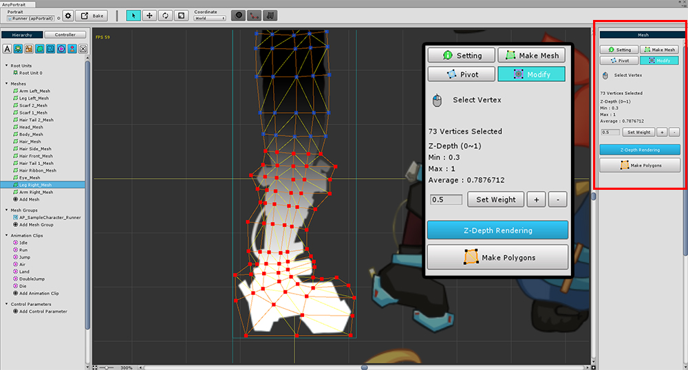

AnyPortrait > 메뉴얼 > 버텍스의 Z-Depth 수정
버텍스의 Z-Depth 수정
1.0.0

모디파이어나 애니메이션에서 메시를 변형할 때, 메시가 깨지는 경우가 있습니다.
폴리곤이 겹치면서 렌더링되는 순서가 의도와 달라서 발생하기 때문입니다.
메시의 폴리곤이 겹치는 경우, 렌더링되는 순서를 직접 지정하여 이 문제를 해결할 수 있습니다.

(1) 문제가 발생한 메시를 선택합니다.
(2) Modify 탭을 선택하고, (3) Z-Depth Rendering을 켜줍니다.
Z-Depth Rendering이 켜진 상태에서는 메시는 흑백으로만 출력이 됩니다.

마우스를 이용하여 버텍스를 선택하면 오른쪽 화면이 위와 같이 바뀝니다.
가중치(Weight)를 주어서 각각의 버텍스의 Z-Depth 값을 수정할 수 있습니다.
값이 클 수록 흰색으로 출력이 되며 "화면의 앞쪽"으로 출력이 됩니다.
작업이 끝났다면 Make Polygons 버튼을 눌러서 갱신을 꼭 해야합니다.

Z-Depth 문제가 해결되어 의도한 대로 출력되는 것을 확인할 수 있습니다.